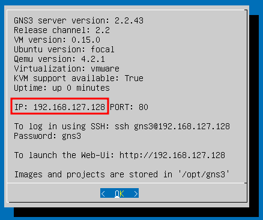
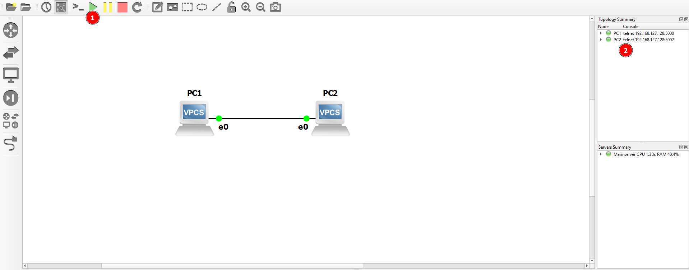

Jupyter Notebook
Для всех рассматриваемых тем предоставляется файл Jupyter Notebook, содержащий последовательность команд.
Если стенд собирался самостоятельно, то данные файлы запустить будет невозможно, т.к. необходима соответствующая python-библиотека, которая пока не в публичном доступе. Тем не менее все команды приводятся, и их можно копировать в клиент для удаленного доступа (например, PuTTY).
Структура файла
Файл Jupyter Notebook состоит из блоков текста и кода. Блоки кода можно выполнять (слева от блока каждого блока с кодом есть кнопка запуска). Их результат (если есть, что вывести) будет отображен под блоком.
Импорт библиотеки
Для использования всех представленных файлов Jupyter Notebook необходимо выполнить следующую команду ниже, без которой некоторый код выполняться не будет. Файл с библиотекой предоставляется вместе с GNS3 VM, которую вам выдали.
Во всех следующих файлах Jupyter Notebook данный блок нужно запускать в первую очередь.
from gns3pyter import NetDev
Связь Jupyter Notebook со схемой в GNS3 VM
Адрес GNS3 VM
Чтобы все блоки кода в блокноте выполнялись корректно, в начале каждого блокнота необходимо указать адрес сервера GNS3 VM, который обычно можно увидеть в окне виртуальной машины

Схема в GNS3 и порты устройств
Чтобы все блоки кода в блокноте выполнялись корректно, схема должна быть предварительно составлена в клиенте GNS3, и все устройства должны быть запущены.

Включите устройства на схеме. Если какие-то устройства не включились, можно нажать кнопку включения еще раз. На панели должны быть указаны порты (указаны после IP и двоеточия) каждого устройства, добавленного на схему.
Подключение к устройствам
IP-адреса и порты должны быть указаны в соответствующих полях. Сделать это нужно один раз в кажом блокноте.
ip = '192.168.127.128'
pc1_port = '5000'
pc2_port = '5002'
IP-адрес, порты и прочие параметры (если используются) должны быть обернуты в кавычки, если в примере они есть.
Чтобы можно было отправлять команды на устройства из Jupyter Notebook, необходимо их зарегистрировать в файле.
pc1 = NetDev(ip, pc1_port, 'vpcs')
pc2 = NetDev(ip, pc2_port, 'vpcs')
После этого можно выполнять блоки с командами.
Основная работа с блокнотом
Выполнение команд
В блокнотах встречаются блоки, которые отправляют команды на устройства.
pc1.cmds("""
команда 1
команда 2
...
""")
Копирование команд в обычный терминал
Если у вас нет доступа к стенду, то можно копировать команды между тройными кавычками в обычный терминал, который в реальности используют для удаленной конфигурации.
Пустые команды
Иногда можно встретить блоки, в которых как будто нет команд
pc1.cmds("""
""")
Такие команды имитируют нажатие клавиши Enter на клавиатуре.
Если команда что-то выводит на экран то это будет сделано прямо под блоком запущенного кода.
Результат после запуска команд
При использовании обычного терминала данной проблемы нет, то при использовании данного Jupyter Notebook есть особенность. Некоторые команды на устройстве обрабатываются дольше 1 секунды, из-за чего в выводе может быть неполная информация о результате выполнения команды. Так, например, команда при настройке IP-адреса выводит скорее всего только
PC1> ip 10.0.0.1/24
Checking for duplicate address...
PC1>
Если выполнить блок кода еще раз, то результат уже будет более полный. Вот такой
PC1> ip 10.0.0.1/24
Checking for duplicate address...
PC1 : 10.0.0.1 255.255.255.0
PC1>
Это особенность библиотеки, которая импортируется в самом начале.
Таким образом, исполняемые строки Jupyter Notebook можно запускать несколько раз, но при повторном запуске команда не будет отправляться на устройство, а будет лишь дополняться вывод, который не успел отобразиться до этого.
Завершение работы с Jupyter Notebook
Последние команды, которые необходимо выполнить в конце Jupyter Notebook, чтобы корректно закрыть сессию удаленного доступа.
pc1.close()
pc2.close()
Используя данный сайт и его ресурсы, вы соглашаетесь с политикой и соглашениями сайта.
©️ Оформление, изложение, медиаматериалы. И. Попов, 2020-2025
Сделано с помощью Material for MkDocs.